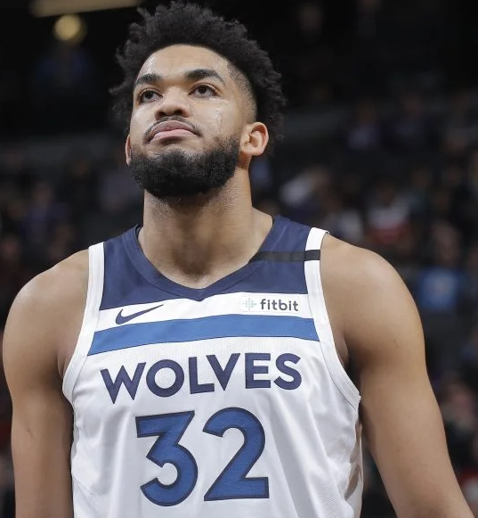

Timber Wolves

The Minnesota Timberwolves are an American professional basketball team based in Minneapolis. The Timberwolves compete in the National Basketball Association (NBA) as a member of the league's Western Conference Northwest Division. Founded in 1989, the team is owned by Glen Taylor who also owns the WNBA's Minnesota Lynx. The Timberwolves play their home games at Target Center, their home since 1990. Like most expansion teams, the Timberwolves struggled in their early years, but after the acquisition of Kevin Garnett in the 1995 NBA draft, the team qualified for the playoffs in eight consecutive seasons from 1997 to 2004. Despite losing in the first round in their first seven attempts, the Timberwolves won their first division championship in 2004 and advanced to the Western Conference Finals that same season. Garnett was also named the NBA Most Valuable Player for that season. The team then went into rebuilding mode for more than a decade after missing the postseason in 2005, and trading Garnett to the Boston Celtics in 2007. Garnett returned to the Timberwolves in a February 2015 trade and finished his career there, retiring in the 2016 offseason. The Timberwolves ended a 14-year playoff drought when they returned to the postseason in 2018.
Kevin Maurice Garnett (born May 19, 1976) is an American former professional basketball player who played for 21 seasons in the National Basketball Association (NBA). Known for his intensity, defensive ability, and versatility, Garnett is considered one of the greatest power forwards of all time. He is one of five NBA players to win both the Most Valuable Player and the Defensive Player of the Year awards. In high school, Garnett was a 1995 McDonald's All-American at Farragut Career Academy and won a national player of the year award. He entered the 1995 NBA draft, where he was selected with the fifth overall pick by the Minnesota Timberwolves and became the first NBA player drafted directly out of high school in 20 years. Garnett made an immediate impact with the Minnesota Timberwolves, leading them to eight consecutive playoff appearances. In 2004, he led the Timberwolves to the Western Conference Finals and won the NBA MVP Award. Garnett has been named to 15 All-Star Games, winning the All-Star MVP award in 2003, and is currently tied for fourth-most All-Star selections with 15. He was named the NBA Defensive Player of the Year in 2007–08, and has been selected nine times for All-NBA Teams and 12 times for All-Defensive Teams. Garnett also holds several Timberwolves franchise records. He is known as "the Big Ticket" for his emphatic dunking and athleticism. In 2007, after 12 seasons with the Timberwolves, Garnett joined the Boston Celtics in a blockbuster trade. In his first year with the Celtics, he helped lead them to the NBA championship, while also finishing in third place for the MVP award. In 2013, Garnett was included in a second headline trade that sent him to the Brooklyn Nets with longtime Celtic Paul Pierce. In 2015, Garnett was traded back to Minnesota. He announced his retirement from professional basketball in September 2016. Garnett made his feature film debut, playing a fictionalized version of himself, in the 2019 film Uncut Gems.
Karl-Anthony Towns Jr. (born November 15, 1995) is a Dominican-American professional basketball player for the Minnesota Timberwolves of the National Basketball Association (NBA). He played college basketball for the Kentucky Wildcats. Towns was named to the Dominican Republic national team as a 16-year-old. He was selected with the first overall pick in the 2015 NBA draft by the Minnesota Timberwolves, and went on to be named NBA Rookie of the Year for the 2015–16 season. He has received two All-Star selections.